Inhalt Index DeskTop Bronstein

 Numerische Mathematik Genäherte Integration von partiellen Differentialgleichungen Methode der finiten Elemente (FEM)
Numerische Mathematik Genäherte Integration von partiellen Differentialgleichungen Methode der finiten Elemente (FEM)


Für die gesuchte Funktion u(x,y) wird in jedem Dreieck ein Ansatz gemacht. Ein Dreieck mit zugehörigem Ansatz wird als finites Element bezeichnet. Dafür eignen sich Polynome in x und y. In vielen Fällen reicht der lineare Ansatz
aus. Die Ansatzfunktionen müssen beim Übergang von einem Dreieck ins benachbarte zumindest stetig sein, damit eine stetige Gesamtlösung entsteht.
Die Koeffizienten 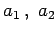 und a3 in (19.146) lassen sich eindeutig durch die drei Funktionswerte 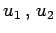 und u3 in den Eckpunkten des zugehörigen Dreiecks ausdrücken. Dadurch ist gleichzeitig der stetige Übergang in die benachbarten Dreiecke gesichert. Der Ansatz (19.146) enthält damit als unbekannte Parameter die Näherungen ui für die gesuchten Funktionswerte. Als Ansatz, der im gesamten Gebiet G für die gesuchte Lösung u(x,y) als Näherung verwendet wird, wählt man
Die Koeffizienten 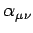 sind noch geeignet zu bestimmen. Für die Funktionen 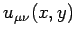 soll gelten: Sie stellen über jedem Dreieck von 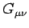 eine lineare Funktion gemäß (19.146) dar und erfüllen die folgenden Bedingungen:
| 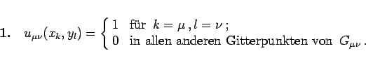 | (19.148a) |
| 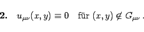 | (19.148b) |
Die Darstellung von über zeigt die folgende Abbildung:
Die Berechnung von 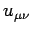 über , d.h. über den Dreiecken 1 bis 6 in der Abbildung, soll für das Dreieck 1 gezeigt werden:
| 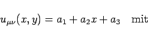 | (19.149a) |
Aus (19.149b) folgt 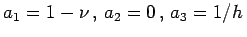, und man erhält für Dreieck 1:
| 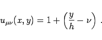 | (19.149c) |
Analog berechnet man:
| 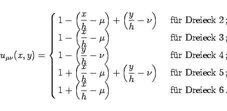 | (19.150) |